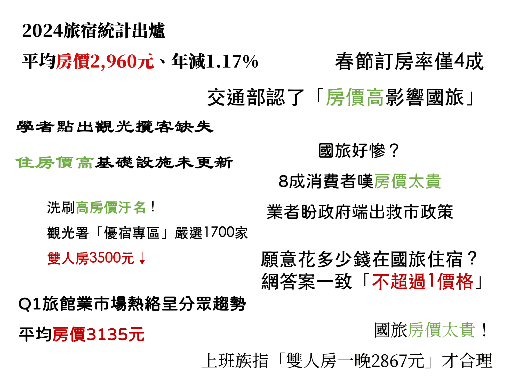
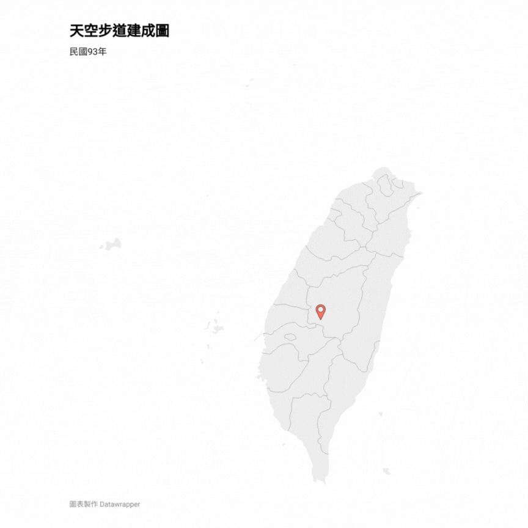

🔍 國旅困境寫真：拆解台灣觀光的結構性困境
攤開交通部觀光署歷年公布的
「臺灣旅遊狀況調查」，這份調查以國人國內旅遊資料為主，解釋國人每年的國旅狀況。
從國人的每人國旅支出來看，在2021、疫情最嚴峻的年代有些許下滑，但直至2023年，已經恢復疫情前的水準。
國人國旅總支出也在疫情後逐年升高，2023年更創新高。
國人國旅總次數更是在疫情後顯著成長，更在2023年突破兩億人次大關。
既然國人國內旅遊的總產值及旅遊人次皆未出現下滑趨勢，為何民眾普遍認為國旅正在衰退❓❓❓
前桃園市觀光旅遊局局長、開南大學觀光運輸學院助理教授楊勝評指出，台灣民眾本來就有休閒旅遊習慣，因此觀光人次自然不會減少。他認為，現在民眾看衰國旅，關鍵在於對國內旅遊的品質與特色不滿。
靜宜大學觀光事業學系副教授黃正聰分析，國人國內出遊的頻率已超過疫情前，整體情況並不如外界想像中慘淡，但「外國旅客差很多，缺了差不多30%的落差。」
疫情前一年曾有1186萬人來台觀光，但疫情後的國外旅客銳減，一年僅剩不到800萬人。
黃正聰說明，外國旅客銳減的主因在於中國與日本兩地的觀光客市場萎縮。陸客不來是影響最大的因素，另外日本旅客因近年日圓持續貶值，也降低他們出國的能力和意願。DoMo集團董事長、台北城市科技大學觀光事業系助理教授李奇嶽建議，在當前陸客人數難以恢復的情況下，政府應考慮適度放寬對東南亞等國遊客的簽證限制，以吸引周邊國家人民來台觀光。
地緣政治也影響台灣觀光產業發展，李奇嶽說：「人家一天到晚看到台海在軍事演習，人家就不會來了，嚇都嚇死了。」當前台海局勢緊張，台灣不安全的國際印象也進一步打擊外國旅客的來台意願。
貨幣因素和地緣政治成為影響外國旅客來台的原因之一。
那麼是什麼東西去影響國人對國旅的觀感呢❓
拆解2024年1月至2025年3月底的報導標題，可以發現有幾個類別的字詞成為新聞媒體的焦點。
其中不少詞語和旅遊當中的「住」息息相關，也是國旅議題中最常被討論的類別。

旅宿價格是報導常討論的議題，民眾普遍抱怨台灣旅宿價格高昂。
從真實數據中解析，整體而言，國旅的平均房價在十年間有所增長。
🏨小百科
依據《發展觀光條例》定義，台灣旅宿業分為三大類別：
觀光旅館：分為國際觀光旅館與一般觀光旅館，主要對旅客提供住宿或其他相關服務，如附設餐廳、會議場所、休閒場所及商店。
旅館：指觀光旅館以外，提供以日或週的住宿、休息場所。
民宿：利用自有住宅，以在地交流為目的，提供旅客城鄉家庭式住宿環境與文化生活之住宿處所。
結合通膨與房價成長率，除了疫情期間房價漲幅大於通膨率外，其餘時間並未過分調漲。
「早期一個房間1200（元），我就覺得很不錯。」資深旅遊記者戚文芬感嘆，近期他在荷蘭市中心租了一個附有小廚房的房間，一晚房價只要三千多元，「這個價格在台灣你找得到嗎？我持懷疑的態度。」走跳旅遊界多年，戚文芬認為，現在台灣的旅宿價格偏高，雖然他理解旅宿業者面臨土地、人事成本等壓力，但消費者的薪資並沒有達到相對應的水準，「你這麼貴，你是把別人當一隻羊宰了就好了嗎？」
民眾對房價偏高的觀感，旅宿業者提出不同觀點。墾丁亞曼達會館董事長、中華民國民宿協會全國聯合會總會長林榮欽指出，因為景觀、地段等條件，台灣的旅宿價格差距大，從一千元一晚的房間到上萬元一晚的都有。礁溪中冠大飯店總經理林繼尊說明，房價差異反應的是旅宿負擔的成本和服務，「你說台灣（房價）貴嗎？看你的選擇，你需要什麼樣的服務。」
成本影響房價高低，即使像礁溪中冠大飯店這種中小型規模的旅館，林繼尊感嘆，其中需負擔的成本除了備品、耗材、房租、食材外，電費也是一大開銷，「一個月電費要花四、五百萬，接下來夏季電費還會更高。」
而平假日價格差距，也加深台灣民眾對「國旅貴」的印象。「平假日的（房價落差）大概會差一倍吧。」黃正聰指出，台灣的總體房價其實不算高，但由於多數民眾習慣在假日出遊，導致假日住宿需求高，即便旅宿價格再高也會有人願意住。
國立高雄大學運動健康休閒學系副教授莊淑姿觀察，台灣人旅遊注重「異國感」，當今天以同樣的成本，卻感受到異國的氣氛，大家普遍會覺得很划算。李奇嶽也表示，許多網友覺得日本很便宜，其實是一種獲得感的差異，若比較週六台灣礁溪、日本箱根兩大溫泉區的房價，箱根的房價甚至可能更高。
面對民眾將國旅與外國旅遊做比較，旅宿業者也喊冤，林榮欽舉例，墾丁、沖繩兩地的房價，淡、旺季價格同樣落差大，拿國外淡季的房價與國內旺季的價格比較，既不合理也不公平，「如果基準點是一樣的來比較，才會比較準確。」
台灣與日本的旅遊政策、市場等皆有不同發展，林繼尊指出，日本本地的旅遊內需市場相對成熟、旅宿產品多元，價格因此穩定。相較之下，台灣的內需市場規模小，使整體成本難以降低。另外，旅遊內容的差異也影響觀光業的發展，日本幅員廣大、四季分明，每個地方、季節皆各有特色，而臺灣旅遊業遇到的大問題是「沒有地方去」，「玩個三天兩夜差不多，四天三夜他（旅客）可能就要想說：『我要幹嘛？』」
台灣很小，國人能討論的地點有限。從詞頻分析中可發現，報導最常討論民眾假期常去的墾丁、花東。
而相較於各地景點差異鮮明的日本，台灣國內景點為人詬病的缺點之一，便是重複性太高。過去在桃園市政府觀光旅遊局擔任局長的楊勝評指出，台灣發展景點的模仿性非常強。

以天空步道為例，全台截至2019年為止，共建設超過20餘座，並以南投的9座最為密集。其中以2016至2018年成長速度最快，三年內共興建10座天空步道。(註：天空步道含天空走廊、空中廊道、吊橋、觀景平台或類似設施。)
楊勝評感嘆，單一產業並不足以撐住整套觀光行程，「包括景點、包括住宿、包括美食、包括購物、包括很多的觀光服務，才能帶給遊客美好的回憶。」他認為，整體環境的營造，需依賴政府帶動才能完成。對此，國立高雄大學運動健康與休閒學系副教授莊淑姿建議，政府能做的便是加強建設公共設施，如洗手間、導覽、交通環境等。
然而，對於台灣具高度同質性的觀光景點，莊淑姿還有不同的觀點。「你去歐洲多走一走，看多了教堂，你就會發現教廠也都很像。」他指出，如東方國家的神社、廟宇，也都有一定的相似度。然而莊淑姿強調，若若台灣各地的景點能發展出屬於自身的文化氛圍，觀光效應就有機會持續存在，景點也才有機會能在時代的篩選當中被保留下來。李奇嶽舉每年香火鼎盛的媽祖繞境為例，「那個勢頭只有越來越旺盛，為什麼？因為這是屬於在地的文化、在地的精神，它的根是扎在裡面的。」
台灣景點眾多，最常被討論的地方為「墾丁」。在我們搜集的1800則新聞中，有高達230則討論到墾丁。墾丁在新聞與社群媒體中的論述多為負面形象，像是「百元櫛瓜」、「1.4萬調酒」等被民眾攻擊。
談起國旅，墾丁往往成為關注焦點。網路上不乏對墾丁的負面評價，如「天價滷味」、「哄抬房價」等標籤頻頻出現，大大折損了墾丁的形象。
墾丁里里長劉琴鳴在墾丁出生長大，他看過墾丁最美的海灘，和豐富的自然景觀，深感墾丁獨特的魅力難以用金錢衡量，「墾丁以前是非常好的。」他感嘆地說。對於墾丁的形象轉變，他有著深刻體會。劉琴鳴指出，特定媒體或網紅，喜愛發布具誤導性或針對性的內容，「提出批評似乎比較有話題性。」

墾丁國家公園境內有許多豐富的地形景觀，周邊的海水浴場也是民眾夏日消暑的好去處。（圖／許巧昕攝）
墾丁作為南臺灣最大的旅遊區，擁有眾多五星級飯店、餐飲以及風景區，更曾是台灣熱門景區代表，在國內外都相當有知名度。李奇嶽說明，墾丁人潮眾多，觀光效益帶來的便是人事、電租、材料各方面的高漲。「你付出了高額的成本來旅行，對它（墾丁）的期待也會高。所以一旦它（墾丁）有一些做不好的，你的抱怨就會高。」
根據交通部觀光署資料，墾丁景點的旅遊人數在十年內「雪崩」式下滑，前後相差近四倍。
黃正聰看到媒體報導墾丁觀光業的「慘狀」，感到相當意外。「墾丁很多業者我都認識，我問他說：『如果遊客衰退七成，那你們這些住宿業者應該都倒光了吧？』」然而根據他的研究，墾丁旅宿業者的營收，不但沒有衰退，反倒還在十年內成長了60%。
黃正聰指出，人數衰減與當地業者實際營收之間的落差，與墾丁客群的改變有關。外國旅客與本地旅客的旅遊模式不同，外國旅客來到墾丁會到各個觀光景點遊憩，本地旅客卻可能因為「以後還有很多機會可以去」、「景點已經去過了」等理由，而選擇待在渡假村裡。「事實上墾丁作為一個觀光據點，它帶動的觀光產值其實是並沒有減少的。」他說。
林榮欽說明，雖然墾丁當地人潮有下降，但是並不像網路上說的如此誇張，「會喜歡來的他（觀光客）還是會來」他說。對於媒體喜愛關注墾丁的現象，楊勝評認為，這是墾丁轉型的大好機會，「既然這麼多人關心，如果能夠趁這個機會而有所轉型，那不是一件很棒的事情？」他說。楊勝評解釋，可以從觀光景點的整潔下手，將街景全面「潔淨化」，就能有效提升觀光環境。
除了環境整潔外，莊淑姿指出，墾丁若想要再次發展，也必須考慮生態議題。墾丁全世界唯一一座，在區域內設置夜市大街和核三廠的國家公園，如今已經國際組織除名。莊淑姿強調，國家公園的首要任務是保護生態環境，然而墾丁在過去人流爆滿、過度飽和的情況，對當地生態和旅遊品質都具有不良影響。他說：「我肯定需要走過去那種大眾發展旅遊的路線嗎？我認為這是一個選擇。」
而劉琴鳴認為，墾丁的旅遊景點多年來都沒有變化、設備老舊，且地方政府缺乏長期性旅遊規劃、品質再造，導致墾丁觀光的競爭力下滑，無法與花蓮、宜蘭、台東、澎湖、小琉球等不斷推陳出新的區域競爭。不過如今墾丁正在慢慢推動改革，包括改善人行空間、交通設計、加強墾丁大街管理、新增旅遊景點等，「墾丁必須改變。」他說。
政府過去針對國旅提出許多政策，其中最為人所知的就是各項針對旅遊的補助與振興優惠。
中央及地方政府近年來不乏推出補助政策，然而黃正聰提醒，旅遊補助的功能是「救急」，且推出後來客數應要增加，倘若吸引的旅客原來就計畫到當地旅遊，「等於是花了錢又沒有帶動新的經濟。」他說。戚文芬對補助也有所擔憂，他認為政策不能成為常態，一旦政府補助成為既定印象，恢復常態後將影響大眾對價格的感受。
莊淑姿則分享，補助對業者的確有短期性幫助，但重點卻是在創造話題性，利用政策作為宣傳吸引更多旅客。然而以長期來看，政府該做仍是精進人力培育、公共建設。身為業者的李奇嶽也呼籲，若產業依靠補助很快就會垮台，人才的能力必須提升，產業才會跟著提升，「我們已經呼籲了很久，應該由政府來帶頭，成立有關觀光的人才機構。」
製造業會不斷外移，只有服務業始終留在國內。李奇嶽強調，服務業中只有觀光業可以替台灣賺外匯，他說道：「只有觀光業是有能力做到服務業貿易。」因此他認為，政府應該將眼光放遠，看見未來產業的發展。
講了這麼多......那麼國旅問題該如何解決❓
如今所有產業普遍缺工，人力成為各行各業皆須解決的困境。林繼尊以中冠大飯店為例，「我們要找廚師也缺工，我們找外面的工程人員也缺工。」就連平時配合的廠商，也因為缺乏人手無法前來修繕。林榮欽指出，許多旅宿業轉由第二代承接，過往只需負責行銷，如今因為人匱乏，還需同時打掃房間、刷洗廁所等等。但許多第一代經營者年
缺工儼然成為觀光產業必須面對的問題。過去企業到求職平台上徵才，人力便會陸續出現，現今消息就算發布，也常常收不到回覆。林繼尊分享，現在人事單位必須化被動為主動，邀請他人前來面試，或是調整輪班模式、開放二度就業，或使用多元管道曝光消息等方式，因應大環境缺工的困境。
不只需要改善人力，黃正聰提到，台灣整體運輸機制的整合，也是一項重要工程。無論抵達郊區旅遊，還是租車後需適應台灣交通，對外國旅客來說都相當困難，「如果要能吸引外國旅客，我們的交通的接駁機制其實是非常重要的。」他說。雖然台灣政府近年嘗試推動「台灣好行」、「台灣觀巴（Taiwan
Tour Bus）」等服務，但兩者近似於公車、旅行社合作。他認為，從基礎交通運輸系統改善，才能吸引到更多遊客。
此外，黃正聰更期盼國人的旅遊觀念能逐漸改變。他指出，台灣人是非常勤奮的民族，無論學校、企業裡都設有全勤獎，也直到2018年才通過「一例一休」的修法，鼓勵大家休假，但外國「休假旅遊」的風氣已經有幾十年至百年的歷史。莊淑姿說明，大眾的休閒行為可以分為「市民休閒、國內旅遊、國際旅遊」三個層次，三者環環相扣，「如果市民休閒做得好，它就很容易變成國內旅遊，甚至是國際旅遊的景點。」他說。
黃正聰解釋，國人多多在平日休閒，能帶動產業變得健康，產業提升後才有更多力氣接待國外旅客。且平日出遊不但不容易塞車，旅遊區的狀況、旅遊品質也都較佳。他指出，許多人認為台灣沒有多少景點可以遊玩，但只要願意花時間想一想，會發現很多沒有去過的地方。「我比較捍衛國旅啦，我覺得出國的成本很高，而且整個CP值沒有國旅來很高。」他說道。
「我年輕的時候就跟你們一樣，」戚文芬聊起自己曾經喜歡到日本、韓國、歐洲等地旅遊的回憶，「我喜歡出國去玩，我一點都不覺得台灣美。」他說。

台灣山林資源豐富，1000公尺以上高山占全島面積29%。（圖／許巧昕攝）
然而年紀增長後，近十年再次回頭看台灣，他忍不住驚嘆台灣真是「福爾摩沙（Formosa，美麗的島嶼）」。戚文芬看見寒帶至熱帶繽紛的植物生態，刻畫出台灣山林的肌理；看見各式各樣的特有種，塑造台灣豐富的生物多樣性。他如數家珍地分享自己巧遇紫嘯鶇、台灣擦樹和諸羅樹蛙的故事，細數台灣小小的土地上究竟擁抱了多少種鳥類，更在形容台灣山水之美時，忍不住說了句粗話。他感嘆，將行程排滿、顧著吃喝玩樂，容易錯過台灣山林帶來的感動。
戚文芬衷心期盼扭轉更多人的對台灣旅遊觀點。他認為，雖然不少人喜好吸睛、能帶來流量的旅遊模式，但挖掘這片土地更具深度的模樣，看見台灣擁有的珍貴美景和自然生態，才是長久之道。
「你要關心這塊土地，你要停下來、要坐在那裡，你才會看到。」
國立政治大學新聞與媒體實驗室
採訪、撰稿、網頁製作：許巧昕、鄭孟佳
指導老師：徐湘芸